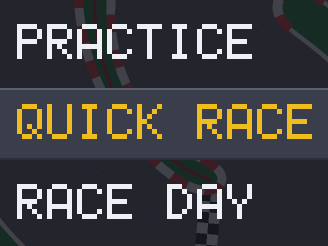
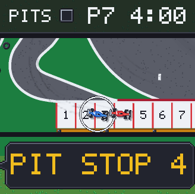
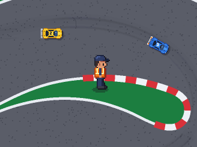
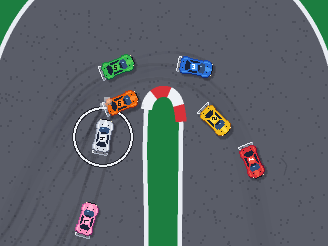
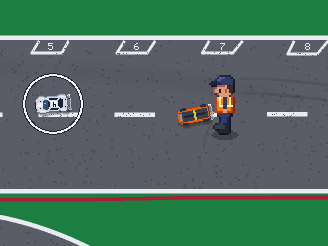
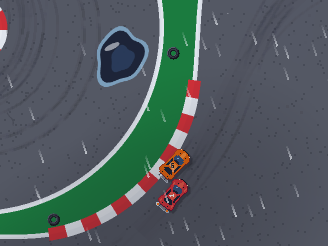
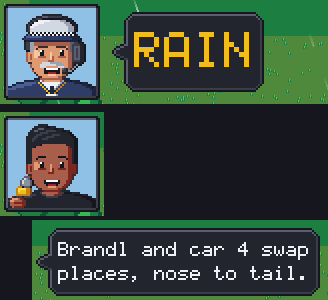
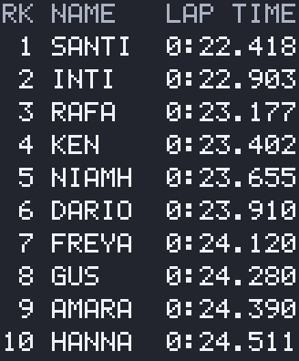

A CLUB RACE DAY

- PRACTICE: your car alone. The official calls every lap.
- QUICK RACE: one race against one, three or six AI cars.
- RACE DAY: qualifying with a staggered start, then a final from the grid. Points and a podium.
- Either way round the track.
FOUR CLASSES, SEVEN COLOURS
- Three bodies. The same physics; a different drive, motor and mass.
- Seven colours. Pick yours.
THE F1 PIT STOP

- Every F1 final owes one pit stop.
- Into the pit lane: the car is held for five seconds, and the PITS box at the top is ticked.
- Skip it and you finish behind every car that stopped.
A REAL CLUB TRACK

- Traced from a drone photo of a real club track. Kerbs, islands, tyres.
- Marshals at their posts.
- The drivers on the stand. Yours is there too.
THIRTEEN RIVALS

- Thirteen AI drivers, up to six on track at once.
- Each has a skill, a temper and a home colour.
- They race, defend, mistime a brake and roll, like you do.
- No rubber-banding. The difficulty setting is yours.
PENALTIES AND CRASHES

- Cut the track or stay on the grass: a five-second stop and hold.
- Contact: a warning, then a penalty.
- Too hard over a kerb, or a hard hit, and the car is on its roof.
- A marshal walks out and sets it back. Usually.
SUN, CLOUD, RAIN AND WIND

- Dry, cloudy, light rain, heavy rain, changing through an event.
- Puddles at the low spots, and spray.
- Less grip in the wet, least of all on the kerbs.
- Gusts lean on a 1.5 kg car. Read the windsock.
THE OFFICIAL AND THE COMMENTATOR

- The official runs the day: the starts, the penalties, the pit stops, the last minute.
- The commentator never stops. Passes, spins, rolls and rain.
- Natural voices: Daniel and Eddy on a Mac, the system's own elsewhere.
- V turns their voices on and off.
TOP-TEN BOARDS

- Fastest lap and best race, per track, direction and class, kept in your browser.
- Your initials on the board.
- Each record keeps the weather it was set in. Filter: ALL, DRY, CHANGEABLE, WET.